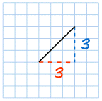
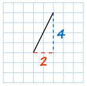
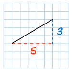
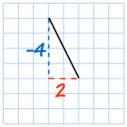
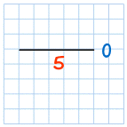
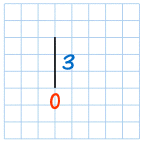

Gradient (Slope) of a Straight Line
The Gradient (also called Slope) of a straight line shows how steep a straight line is.
Calculate
To calculate the Gradient:
| Gradient = Change in YChange in X |  |
Have a play (drag the points):
Examples:
|  | The Gradient = 3 3 = 1 So the Gradient is equal to 1 |
|  | The Gradient = 4 2 = 2 |
|
| The line is steeper, and so the Gradient is larger. | ||
|  | The Gradient = 3 5 = 0.6 |
|
| The line is less steep, and so the Gradient is smaller. | ||
Positive or Negative?
Going from left-to-right, the cyclist has to Push on a Positive Slope:


When measuring the line:
- Starting from the left and going across to the right is positive
(but going across to the left is negative). - Up is positive, and down is negative
|  | Gradient = −4 2 = −2 |
That line goes down as you move along, so it has a negative Gradient.
Straight Across
|  | Gradient = 0 5 = 0 |
A line that goes straight across (Horizontal) has a Gradient of zero.
Straight Up and Down
|  | Gradient = 3 0 = undefined |
That last one is a bit tricky ... you can't divide by zero,
so a "straight up and down" (vertical) line's Gradient is "undefined".
Rise and Run
Sometimes the horizontal change is called "run", and the vertical change is called "rise" or "fall":

They are just different words, none of the calculations change.